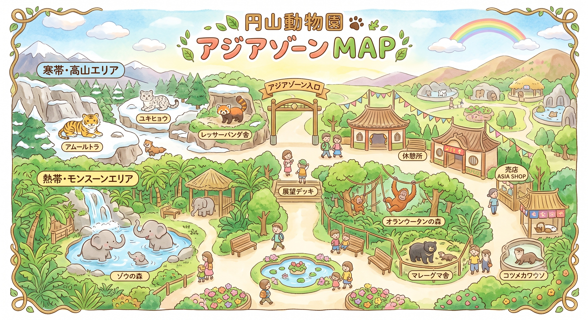

スタンプであるく どうぶつえん
ゾーンの看板にあるQRコードを読みとると、
そのゾーンにいるどうぶつが1頭、スタンプになります。
0 / 6
6つのゾーンに、それぞれ1つずつスタンプが押せます。 同じゾーンでも、出てくるどうぶつは そのときによってちがいます。
それぞれのゾーンに、QRコードの看板があります。 マップを見ながら、まだ行っていないゾーンをさがしてみてください。

会えたどうぶつだけが、ここに並びます。 はじめは白黒ですが、タップしてクイズに全問正解すると色がつき、 記念の画像と飼育員さんのお話が読めます。